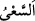
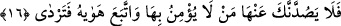
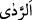

yalnız O’na has kılarak Allâh’a kulluk etmeleri emrolunmuştu.” (el-Beyyine, 98/5)
buyurur.
Bu âyette kullara büyük bir tehdid ve Allâh’ın izzet ve büyüklüğüne delil vardır. Ne
var ki: “Benim rahmetim gadabımı geçmiştir.”[65] Onun için kıyameti ve onun
geleceğini gizlemedim.
Âyette “
(çalışma/herkesin peşinde koştuğu şey)” özellikle zikredilmiştir. Bu,
kıyametin getirilmesi ile bizzat murâd edilenin, kulların ibâdet sebebiyle
mükâfatlandırılması veya âsîlerin kötü tercihlerinin sonucu olarak ibadeti terk etmeleri
sebebiyle cezalandırılması olduğunu haber vermektir.
16. Ona inanmayan ve nefsinin arzularına uyan kimseler sakın seni ondan
alıkoymasın.
“Ona” yâni kıyâmete “inanmayan ve nefsinin arzularına” semâvî bir burhanın ve
aklî bir delilin desteklemediği nefsin meyline dayanan murâdına, el-İrşâd’da
belirtildiğine göre nefsinin hissî ve fânî şeylerden arzuladığı şeylere “uyan kimseler
sakın seni ondan alıkoymasın,” yâni kıyameti anmana ve onu gözlemene mâni olmasın.
Görünüşte âyet kâfir olan kimseyi Mûsâ (a.s.)’ı kıyametten alıkoymaktan nehyeder
görünse de aslında en beliğ şekilde Mûsâ (a.s.)’ı kıyameti unutmaktan nehyetmektedir.
Çünkü bir şeyin sebeplerini ve ona gelen yolları önlemek, delil yoluyla onu yasaklamak
ve sebeplerini ortadan kaldırmak demektir.
“Sonra mahvolursun” “
” ölüm ve helâk demektir. Çünkü kıyametten gafil olmak
ve onun azabından insanı kurtaracak ibadetleri yapmamak neticede insanı helâk eder.
Ayetteki bu yasaklamaktan maksad dinde istikâmeti emirdir. Âyette hitap Mûsâ
(a.s.)’adır, kasdedilen ise başkalarıdır. Bu âyet ve ardından gelen âyetler Allâh’ın Mûsâ
(a.s.) ile konuştuğuna ve Mûsâ (a.s.)’ın O’nu işittiğine delildir.
Eğer: “Mûsâ (a.s.) nasıl oldu da bu sözün Allah kelâmı olduğunu bildi?” diye
sorulursa şöyle cevap verilebilir: Hak Teâlâ’nın sözleri, mahlûkatta olduğu gibi nefesle
kesilmemiştir. Çünkü O’nun kelâmı vahdânî bir feyizle olup kesintisizdir. Yine Mûsâ
(a.s.) O’nun kelâmını altı yönden ve bütün uzuvları ile işitmiş, sanki bütün vücudu kulak
kesilmiştir. Aynı şekilde mü’min âhirette sırf yüz, sırf göz ve sırf kulak olacak. Her
cihetten, her cihetle, her cihete bakacak. Aynı şekilde her cihetten her uzvu ile işitecek.
Aynı şekilde Hakk’ı müşahede ederken yönlerden bir yönde değil, her yönden müşâhede
edecek. Kulun duyması ve görmesi yönlerle sınırlanmayacaktır.
Bu kelâmın kendisine âid olduğu hususunda Allah Teâlâ’nın zarûrî bir ilim yaratmış
olması da mümkündür. Nitekim Hira mağarasında Cebrâil (a.s.) göründüğünde Hz.
Peygamber (s.a.) için de böyle zarûrî bir ilim yaratılmıştır.